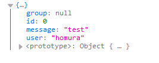

[鐵人賽Day8] 使用Json傳遞訊息和跨網域驗證
文章目錄
今天要來講講怎麼使用JSON傳遞訊息及跨網域訊息。
使用JSON格式
在Service註冊
其實這步是可以跳過，因為SignalR預設會開啟AddJsonProtocol()，至於加在哪裡？就是直接加在AddSignalR()後方
public void ConfigureServices(IServiceCollection services)
{
services.AddSignalR().AddJsonProtocol();
}
之後你回傳的變數中，若為一個物件的話，會自動轉成JSON物件回應
回應統一使用Json格式
我們先建立一個Class來當Json的預設格式，先建立一個檔案JsonFromat.cs，程式碼大概像下面這樣。
using System;
namespace CoreWeb.JsonFormat
{
public class ReponseJson
{
public int id { get; set; }
public string user { get; set; }
public string message { get; set; }
public string group { get; set; }
}
}
再來我們去Hub的建構子裡面載入，首先using剛剛建立Class
using CoreWeb.JsonFormat;
然後在Hub建立一個變數，在建構子裡面物件化
public class ChatHub : Hub
{
private ReponseJson responseJson;
public ChatHub()
{
responseJson = new ReponseJson();
}
}
這樣不管哪個方法都回應這個responseJson就好了，例如我們建立一個方法要傳給所有人大概會像下面這樣
public async Task SendMessage(string user, string message)
{
responseJson.user = user;
responseJson.message = message;
await Clients.All.SendAsync("ReceiveMessage", responseJson);
}
其實這個跟以前的Web API用法差不多….
然後User端在接收時，就會變成一個Json格式，沒填值的變數會自動補上Null，Cosole.log()出來大概就像下面這張圖。

讓Signal可以跨網域運作
跨網域運作老實說我是覺得用不太到，因為SignalR App都是自己寫得前端App配合，通常不會開放給其他網域用，如果是要用到SPA上的話，其實ASP.NET Core是有辦法把編譯完成SPA放進專案裡的，不過文件有介紹到，應該是有人會用到，所以還是介紹一下吧！
首先先加入命名空間Cors到Starup.cs
using Microsoft.AspNetCore.Cors;
註：不知為什麼MSDN文件沒提這步…
Servie註冊使用AddCors()
public void ConfigureServices(IServiceCollection services)
{
services.AddSignalR();
services.AddCors();
}
再來到Configure中使用UseCors()，WithOrigins()裡面的變數則是允許的網域，如果使用*代表任意網域都行，這邊注意一定要在SignalR前面使用，順序錯了會失敗
public void Configure(IApplicationBuilder app, IHostingEnvironment env)
{
if (env.IsDevelopment())
{
app.UseDeveloperExceptionPage();
}
app.UseCors(builder =>
{
builder.WithOrigins("*")
.AllowAnyHeader()
.WithMethods("GET", "POST")
.AllowCredentials();
});
app.UseSignalR(routes =>
{
routes.MapHub<ChatHub>("/chatHub");
});
app.UseDefaultFiles();
app.UseStaticFiles();
}
最後前端連線URL時記得打上完整網域名稱
var connection = new signalR.HubConnectionBuilder().withUrl("https://localhost:5001/chatHub").build();